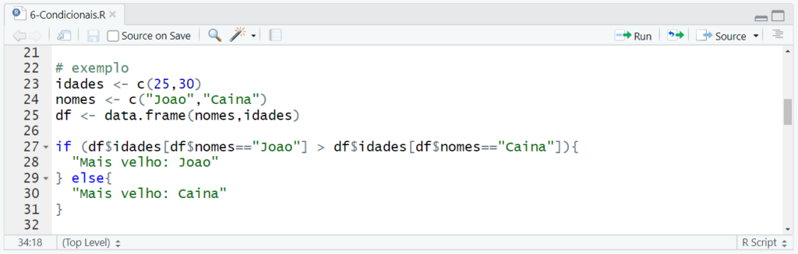

R (1993)
R é uma linguagem de programação e ambiente de desenvolvimento estatístico amplamente utilizado por estatísticos, cientistas de dados e pesquisadores. Foi criado por Ross Ihaka e Robert Gentleman na Universidade de Auckland, Nova Zelândia, no início dos anos 90.
Ela é uma linguagem interpretada, o que significa que os programas escritos em R são executados diretamente, linha por linha. Isso permite que os usuários interajam com os dados de forma interativa, experimentando diferentes análises, gráficos e modelos estatísticos em tempo real.

Uma das principais características é sua capacidade de lidar com análise estatística e visualização de dados. Ela fornece uma ampla variedade de funções estatísticas e pacotes que permitem aos usuários realizar tarefas complexas de análise de dados, modelagem estatística, criação de gráficos e muito mais.
Atividade desenvolvida como extensão no projeto
PACEX/Mundo Tech do curso de análise e Desenvolvimento de Sistemas
Unipar - Cascavel